日々FTPサーバーに色々なファイルがアップされてほくほくです(*´д`)みなさんありがとうございますねヽ(´▽`)ﾉ
刺激的な日々が過ぎてゆきます、こんにちは。
ある日、ルディクエをやろう！(･∀･)って事になって一旦メインキャラであるTEVAは落ちたんですね、でも万能薬を補充するのを忘れてまた戻ってみたらなんと式祢がログインしていました(ﾉ▽`)
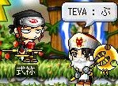 うわーん会いたかったよー・ﾟ・(つД｀)・ﾟ・。
しかし、ルディクエメンバを激しく待たせていたので、なんと式にアイテム移動を手伝ってもらうという、普通久々の人間にはしないような暴挙。
式、、、超ごめんね＿|￣|○ また会おうヽ(´ω`)ﾉ
□ でと、話は変わりますが、十二時さんにPANDAを贈ってもらいました・ﾟ・(つД｀)・ﾟ・。
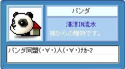 パンダ同盟ですよ、パンダ同盟ｗ
ペットを飼うのは本気で初めての経験なので色々戸惑いましたが、みんなに色々教えてもらったりしてなんとか操作方法を覚えました。ちょこちょこ後ろを付いて来やがってほんまにかわええ・・・(*´д`)
こやつの名前は源蔵です。名札はまだ無いんですがね('A`)
無意味に立たせて遊んでみたり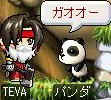
■ えー、おめでたい話を三つほど。
■ …しかし宴はこれで終わりではなかった！(ﾟДﾟ)この後、十二時さんを皮切りに、俺への告白ターイム！
・
・
・
すこぶる不評でした＿|￣|○
必ず誰か一人を選ばなくてはならないので、、、やはりここは相方であるさちょこを！どー(ﾟДﾟ)ーん
■ んー…最近日記の内容がちぐはぐになって来ている感じがする。言いたい事が多すぎてまとめきれていない感じ。
だって自分でも読みにくいもん。
今日の所はこれでｵﾜﾘ
ども、こんにちは。ここ数日、何やらケーブルテレビとやらが引かれたんです、で、その工事とかスプリッタの不具合とかで外部へ向けての公開が出来なくなっておりました。申し訳無いです＿|￣|○
えーと、またこんな状態になるやもしれないのですが、まあそれが手羽サーバーの持ち味って事で御勘弁(何
■ それでは珍しく昨日の出来事をば。
俺はですね、忍耐が苦手です。すごく苦手です。もう病気なんじゃなかろうか？('A`)ってぐらい苦手です。
なのに昨日は何を思ったか風呂から帰ってきた後にカニング忍耐B1に挑戦しだしたんです。
世間的にはB1は簡単だと言われているみたいですが、俺にはそうは思えませんでした。
そしたらまあ無性に人恋しくなるわけですね（’’）だから呼んでみたんです。赤い街道さんを(ﾟДﾟ)
TEVA：「赤さん、忍耐での俺を助けろ( ﾟДﾟ)y-~~」
赤： 「私を忍耐娘と知っての狼藉か！」
ﾋｨｨｨｨｨｨｨ(((((( ;ﾟДﾟ))))) そ…そうとは知らずに僕ったらとんでもない事を口に出してしまいました！(;ﾟДﾟ)お許しくだしゃんせーー＿|￣|○|||
みんな進むの早いのなんのって(((((( ;ﾟДﾟ)))))
しかもぱっぱっぱ、っとB1・B2をクリアして俺のお手伝いをしに帰ってきてくれるんですよ・ﾟ・(つД｀)・ﾟ・。
B2にいたっては俺が一段階の最初のとこを登ってるあいだに二周完了(;ﾟДﾟ)
カルさんとゼロとさちょこと赤さんはとんでもなく忍耐が上手くって、意外な事に十二時さんも上手かったです('A`)認めねぇ
…しかし、オルレアードさんの忍耐の技術は俺と同じ程度のようですな、、、(´_ゝ`)ｸｯｸｯｸ､､､
■ もうね、赤さん素敵杉。俺が忍耐中何度も何度も何度も落下しても諦めずに指導してくれるのですよ・ﾟ・(つД｀)・ﾟ・。
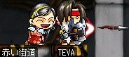
一緒に行った人たちも、普通ならいい加減にしろヽ(｀Д´)ﾉ
って諦めて先に寝てしまう勢いだったんですが、俺がクリアするまで最後までいてくれました・ﾟ・(つД｀)・ﾟ・。
もうね、あなた達大好きですよ；；
上で待つ赤さんの元へ俺がへーこら登ってくる。そう、、、かーちゃーん(*´д`)って感じでさ(何
TEVA：あぁ、、、(*´д`)ママン、ここまで来れたよ…
赤さん：我が子の成長を見ているようだ…
とかやってましたｗ
なんか書いてて恥ずかしくなってきたけど('A`)まーそんな感じ。B3初めてクリアできたよーヽ(ﾟ∀｡)ﾉ
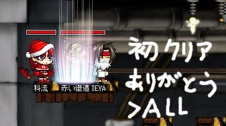
記念の一枚。パチリ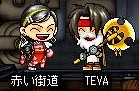 ええ子や、、、(*´д`)
ｵﾜﾙ
うーむエクスタスィ(挨拶)
なにやらブラザーゼロからコミックバトンとやらが回ってきました。漫画とかについてXXの質問ライト版って感じかね。結構前に由未代BossからMusicバトンってのも回ってきてたのですが、、、なんとなくブームが終わった感じだったのでやめておきましたｗ
ほんじゃま、チャキチャキ答えて行きましょうかねぃ、ページ数も少ない事だし（なんの
以上！終了！ヽ(ﾟ∀｡)ﾉまたなんかあったら回してみておくれ(´∀`)
作るのがめんどくさくてやってない、ネタ性の高い100の質問とかくれたら俺は喜ぶよ( ﾟДﾟ)y-~~
■ 次行きます。いつだったか忘れたけども、明け方ぐらいにさちょことなちょとミエポコと俺でバル探しの旅に出てきました。まあ相も変わらずさちょこは即死。で、まあリベンジだーって事で以下のSSとなるわけです。
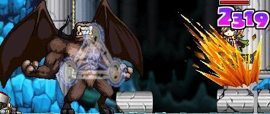ずどーん
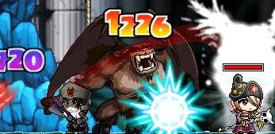メメタァずぎゃーん
(実はTEVAが巻き添えクラッシュを受けている点に注目)
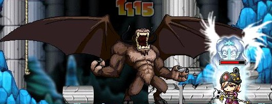あんぎゃー
はい、参加賞Σ(ﾟ∀｡)
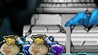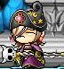
熱 暑ぅ！！
どうも、こんにちは(挨拶)
早いものでもう7月ですよ！6月は本当に色々あったなぁ、、、(´∀`)
OFF会とか！！
…無理矢理話題を振った感は高いけどまあそれは気にしない方向で。もう、、、一週間経っちゃってるよ兄さん！( ﾟДﾟ)って感じですがまあいいじゃないですか。僕の日記は一週間に一回とか月に一回とかいうぺースブゴッ!(回線が切断されました)
…むー、ここは誰ですか？
■ 7月2日にシャオさんの家をメイン会場にさせてもらって再びOFF会を開催しましたｂ
メンバーは俺とさちょこ、シャオさんと由未代BOSS、科流さん、そして個人的にとっても会いたかったマイブラザー十二時さん、さらにマイマスター武勇さんと、WEBカメラを通じて茶小町with愛猫サスケ。
もう楽しいのなんのて(*´д`)やっぱあれだね、リアルでメイポの話題に華が咲くと貴方たちに愛おしさが沸きまくり(*´∀`)うぇうぇ
昼間はすでにOFF会メイン会場と化した大阪府にあるFUJIYAMAランドにて。
十二時さんは「やはり俺は十二時なんだから正午に参上すべきだよね( ﾟДﾟ)y-~~」と息巻いてたんですが到着したのは1時でしたよっと(´σд`)
駐車場に入ろうとしたら目の前には品川ナンバーの車が！Σ(ﾟ∀｡)
車の中で俺とさちょは「やっヴぇーって！あれ絶対ブラザーだYO!ヽ(ﾟ∀｡)ﾉ ﾋｬｯﾊｰ☆」
って感じではしゃぎまくってました。HAHA
このFUJIYAMAランドってとこは1時間○○円・とか5時間1800円って感じでアーケードゲームとかカラオケとかダーツとかビリヤードとかボールプールとか（ぁ が遊びたい放題のところなんですね。つまりOFF会会場としては完璧なわけです(´σ∀`)σYO☆
まあ十二時さんは関東から車ではるばるやってきたわけですから疲労が凄まじいわけですね、だから微妙に眠たい感じのビリヤードになってしまいましたが俺はものすごく楽しかったですね(･∀･)
カラオケでは十二時さんとカルさんの歌の上手さにびびりながらも、負けじと俺もDir en grey っつー結構無茶な歌手の歌を熱唱してまいりましたｂ やっヴぇ、俺歌い込みすぎかしら？('A`)
ああ、さちょこは普段歌わない子なんですが強制的に歌わせました！Σ(ﾟ∀｡)やりゃぁ出来るんじゃん、さちょ(´σд`)
あー写真を全世界に向けて公開しTEEE('A`)
あ、当局の介入があったのでだめでした(なんだと
■ 夜はシャオさんの家にお邪魔して大騒ぎ(´∀`)もうね、とってもホームパーティって感じですばらしかったですよ？（・ｘ・）由未代Boss、貴女の作るご飯はとてもおいしゅうございました（つд`）本当にありがとうございます。ご馳走様でした；；
またお邪魔しますのでその際はよろしく（ぁ
ってかそのときの様子がもっとよくわかるのは茶小町HPの日常日記の方かもしれないｗ
そして日曜日は十二時さんが手羽家にお泊りという素敵イベントでした(･∀･)
もう、あれだ。十二時さんダンディー杉ピザとか食いましたよ(´∀`)ピザピザ。TEVAはそーゆー店には普段行かないのでとっても新鮮でしたよヽ(ﾟ∀｡)ﾉ
そしてここでもご馳走様でした（-人-）
ほんと、みんなにはいくら感謝しても足りないなー＿|￣|○どうやって伝えようか、この想い。ﾁｮﾝﾁｮﾝ